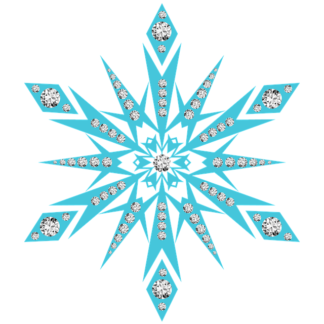

Ghost
Enjoys long walks in the snow and eating wildlings.
- Species: Direwolf
- Age: 6
- Diet: Wildlings, Grumkins, Snarks and all contents of the Castle Black pantry.
- Family: Grey Wind, Lady, Nymeria, Summer, Shaggydog.
Ghost is one of six direwolf pups that are found by the children of House Stark. He is adopted and raised by Jon Snow. Ghost is an albino with white fur and red eyes. Though he was the runt of the litter when he was born, he quickly grew to be as big as the rest of his siblings. Learn more..